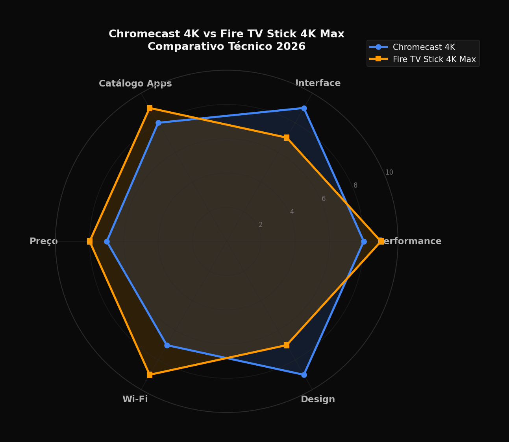

Transformar qualquer TV em uma Smart TV nunca foi tao facil. Os dispositivos de streaming compactos revolucionaram a forma como consumimos conteudo, e dois modelos dominam o mercado brasileiro: o Chromecast with Google TV (4K) e o Fire TV Stick 4K Max da Amazon. Neste comparativo completo, analisamos cada aspecto para ajudar voce a fazer a melhor escolha.
Comparativo Visual: Chromecast vs Fire TV Stick
Antes de mergulhar nos detalhes tecnicos, veja o comparativo visual das principais caracteristicas dos dois dispositivos:

Visao Geral dos Dispositivos
Ambos os dispositivos sao dongles HDMI compactos que se conectam a porta HDMI da sua TV, transformando-a em uma Smart TV completa. No entanto, suas abordagens e ecossistemas sao bastante diferentes.
O Chromecast with Google TV (4K) lancado pela Google traz a interface Google TV, integracao profunda com o ecossistema Google e suporte a Google Cast. O design e um pequeno oval com controle remoto dedicado.
O Fire TV Stick 4K Max da Amazon e um dongle retangular tradicional com interface Fire OS, integracao com Alexa e ecossistema Amazon Prime. A versao Max oferece processamento mais rapido que o modelo padrao.
Especificacoes Tecnicas
O Chromecast 4K e equipado com processador Amlogic S905D3, 2GB de RAM e 8GB de armazenamento. Suporta 4K a 60fps, HDR10, HDR10+ e Dolby Vision. O audio suporta Dolby Atmos via pass-through.
O Fire TV Stick 4K Max usa processador MediaTek MT8696, 2GB de RAM e 8GB de armazenamento. Tambem suporta 4K a 60fps, HDR10, HDR10+, Dolby Vision e Dolby Atmos. A principal vantagem e o Wi-Fi 6 integrado.
Em testes de benchmark, o Fire TV Stick 4K Max apresenta desempenho ligeiramente superior em multitarefa e abertura de apps. A diferenca e perceptivel mas nao dramatica para uso casual.
Interface e Experiencia do Usuario
A Google TV do Chromecast e visualmente mais moderna e organizada. A tela inicial usa algoritmos para recomendar conteudo de todos os seus apps em um unico feed. A busca universal funciona excepcionalmente bem, encontrando titulos em qualquer servico instalado.
A interface Fire OS da Amazon e mais direta, priorizando conteudo Prime Video. Embora funcional, apresenta mais promocoes e recomendacoes pagas. A personalizacao e mais limitada comparada a Google TV.
O controle remoto do Chromecast inclui botao dedicado para YouTube e Netflix, alem de controle de volume da TV. O controle remoto do Fire TV Stick inclui botoes de atalho para Prime Video, Netflix, Disney+ e Amazon Music.
Catalogo de Apps e Compatibilidade
Ambos dispositivos oferecem os principais apps de streaming: Netflix, Disney+, HBO Max, Prime Video, Globoplay, YouTube e Spotify. A diferenca esta em apps de nicho e jogos.
O Chromecast tem vantagem em apps do ecossistema Google: YouTube Music, Google Fotos, Google Podcasts. O suporte a Google Cast permite espelhamento facil de qualquer dispositivo Android ou Chrome.
O Fire TV Stick oferece acesso a jogos mais avancados atraves do Amazon Luna (servico de cloud gaming). Tambem integra melhor com dispositivos Alexa da casa inteligente.
Performance e Fluidez
Em uso diario, ambos os dispositivos oferecem experiencia fluida. O Fire TV Stick 4K Max abre apps ligeiramente mais rapido, provavelmente devido ao Wi-Fi 6 que reduz latencia em redes modernas.
O Chromecast apresenta transicoes de interface mais suaves e animacoes mais elegantes. A navegacao na Google TV e intuitiva, com menos cliques para encontrar conteudo.
Em testes de streaming 4K HDR, ambos mantiveram qualidade consistente sem buffering em conexoes de 50 Mbps ou superiores. A estabilidade e equivalente entre os dois.
Preco e Custo-Beneficio no Brasil
Em 2026, o Chromecast with Google TV (4K) custa cerca de R$ 350 a R$ 450 no Brasil, variando entre varejistas. O Fire TV Stick 4K Max esta na faixa de R$ 300 a R$ 400.
Durante promocoes como Black Friday, ambos chegam a R$ 250 ou menos. O Fire TV Stick frequentemente aparece em bundles com assinatura Prime ou outros produtos Amazon.
Considerando o preco similar, a escolha deve se basear no ecossistema que voce ja usa. Usuarios Google/Android devem preferir o Chromecast. Quem ja usa Amazon Prime e Alexa deve optar pelo Fire TV Stick.
Veredito Final
Escolha o Chromecast 4K se: voce usa Android, valoriza interface moderna, usa Google Cast frequentemente, prefere busca universal integrada e prioriza design elegante.
Escolha o Fire TV Stick 4K Max se: voce e assinante Prime, usa Alexa e dispositivos Echo, quer Wi-Fi 6 para futuro-proofing, joga via Amazon Luna ou prefere preco ligeiramente menor.
Ambos sao excelentes dispositivos que transformarao sua TV em uma Smart TV completa. A diferenca real e minima para uso casual de streaming. A decisao final depende mais do ecossistema pessoal que de diferencas tecnicas.